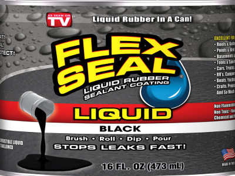
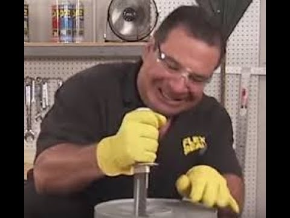
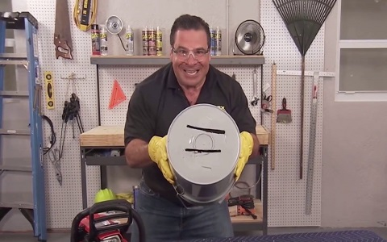
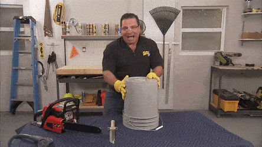

SYSTEM MALFUNCTION
SYSTEM MALFUNCTION

Introducing the legendary Flex Seal. This powerful rubberized sealing compound creates a tough rubber coating on any surface. Flex Seal is so powerful it may even be able to seal up the Ozone layer. Also check out Flex Glue
 
Here we see the Legendary Phil Swift taking a knife and a chainsaw to a bucket. Now that's alotta damage! Click below to see how flex seal can seal a bucket after a few coats.
